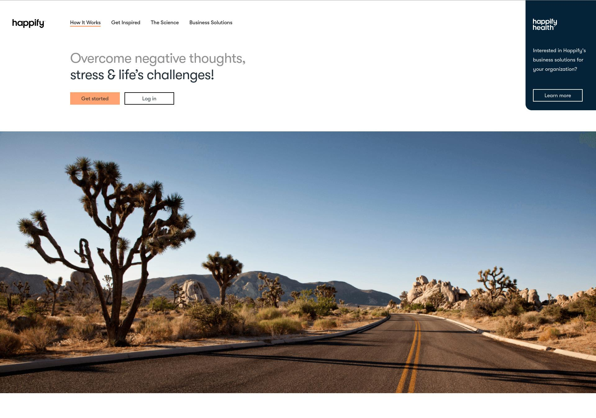
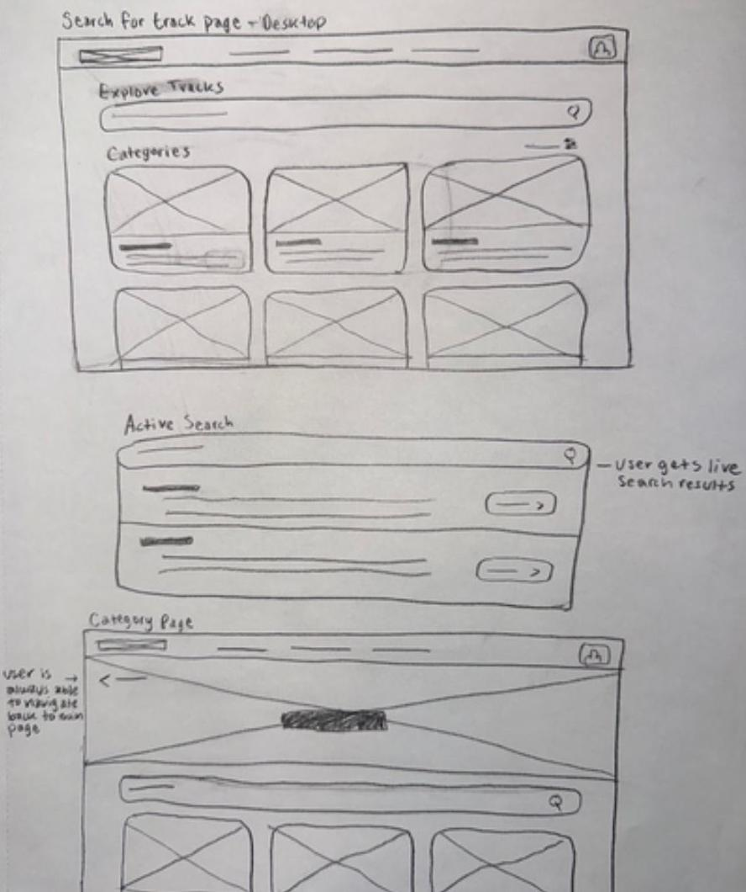
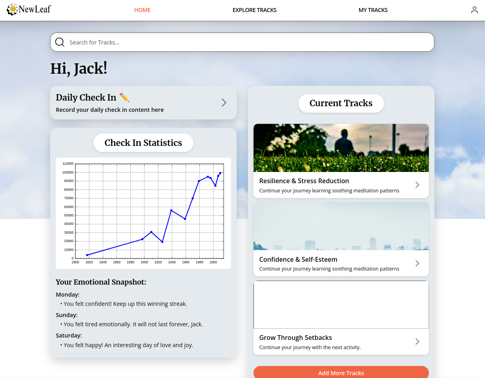

NewLeaf
A comprehensive redesign of the Happify platform to help young adults manage daily stress through bite-sized activities.
Role: Developer & Presenter Lead | Group #1
1. Defining the Problem
We evaluated the original Happify platform and discovered multiple usability issues that created friction for users seeking mental health support. The platform felt visually outdated with inconsistent spacing and unnecessary visual clutter.
- Lack of User Control: The chat lesson locked users into a linear flow without an escape button or progress bar, removing their ability to navigate freely.
- Unclear System Status: Activity tiles on the "Instant Play" page were greyed out without explanation, leaving users confused about how to unlock them.
- Forced Onboarding: Users were forced to create an account immediately without an affordance to return to the homepage to explore the site first.

The original Happify interface pictured Jan 2026.
2. Process & Design Decisions
Our redesign, NewLeaf, aimed to resolve these issues by prioritizing clear visual hierarchy, standardized navigation, and a calming aesthetic.
Low-Fidelity Wireframing & Early Revisions
During our initial peer testing on low-fidelity concepts, we found that users struggled with navigation due to inconsistent back buttons appearing in different locations and styles. To fix this, we standardized back buttons to a single icon style in the same location across all screens. We also noticed users confused description boxes with action buttons, so we hid full descriptions behind clickable elements to reduce clutter.
Mid-Process Structural Changes
The "Explore Tracks" task caused the most hesitation during testing. Users were experiencing unnecessary friction clicking through broad categories just to find specific tracks.
- Decision: We reorganized the search results layout to display individual tracks as the main results.
- Outcome: We bypassed the category page entirely, streamlining the navigation path and reducing the required clicks to start an activity.

Revised layout for search results prioritizing individual tracks over broad categories.
3. High-Fidelity Testing & Outcomes
We developed a high-fidelity prototype simulating form validation, an 800ms timed loading delay for track searches, and an interactive dark mode toggle. We tested this prototype with three participants representing our target demographic of young adults.
Key Findings & Fixes:
- Search Functionality: One participant misconstrued how to use the search bar. Improvement: We planned to implement a fully functional search bar in the final design.
- Intimidating Copy: Users felt the "Pledge" button to start a track was too formal for a mental health app. Improvement: Changed the text to "I'm in!" or "Start This Step".
- Hidden Settings: A user experienced slight hesitation finding the dark mode toggle hidden in the account menu. Improvement: We moved the toggle to a clearer, more prominent location on the homepage.
4. The Final Product
All participants praised the redesign for its "clean" and "calming" aesthetic that didn't feel cluttered or stressful. By standardizing navigation, reducing mandatory clicks, and providing instant visual feedback, NewLeaf successfully offers an accessible and intuitive experience for stress management.

The final NewLeaf high-fidelity prototype featuring a clean dashboard and dark mode implementation.